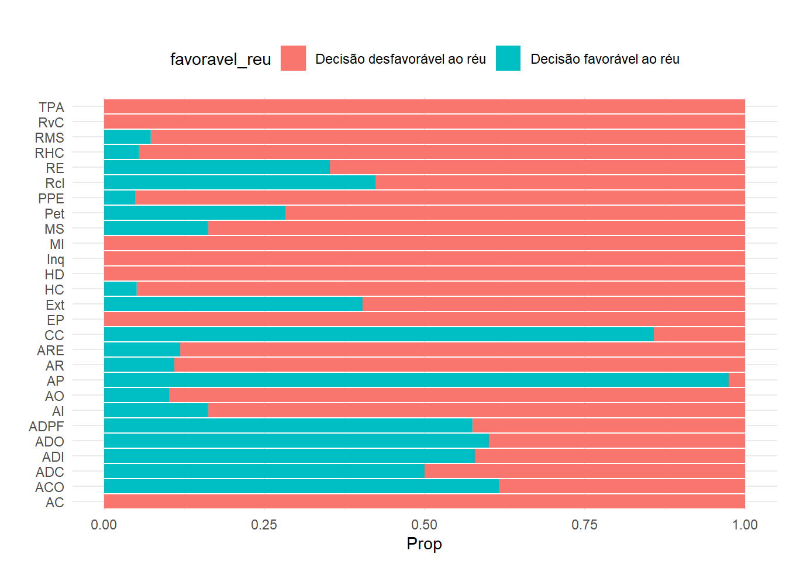
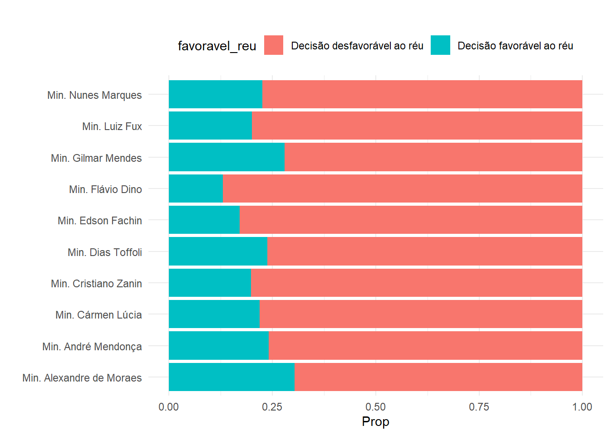
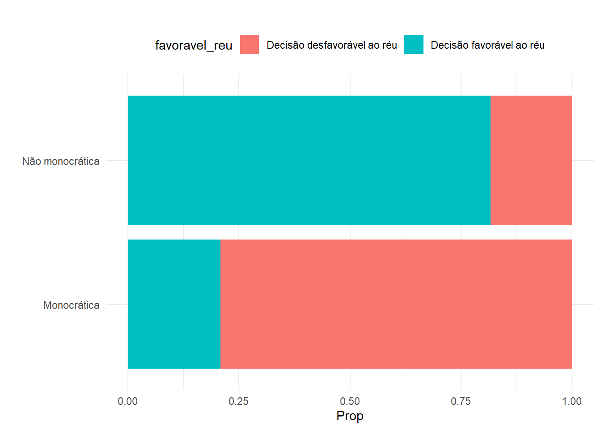
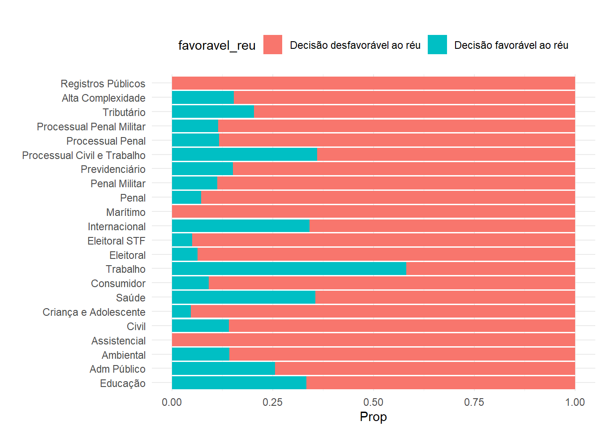

Neste trabalho, buscamos realizar uma classificação binária utilizando dados públicos disponibilizados pelo Supremo Tribunal Federal. Selecionou-se a classe do processo, o nome do ministro que proferiu a decisão, uma covariável indicadora se a decisão foi monocrática ou não e o ramo do direito do processo. Utilizaremos estas covariáveis para tentar modelar o tipo de decisão, se foi favorável ao réu ou se a decisão foi desfavorável ao réu. Para isso, testaremos diversas abordagens de classificação binária, sempre utilizando o framework tidymodels.
Mostrar o código
if (!require("pacman")) install.packages("pacman")pacman::p_load(MASS,tidyverse, readxl, janitor,xgboost,tidymodels,vip,rpart.plot, conflicted,tictoc,finetune,doParallel,DataExplorer,future, gridExtra,compareGroups,DT,naivebayes,discrim,baguette,progressr, corrplot,skimr,GGally,glmnet,class,themis,kknn,gt,ranger, kernlab,qgraph)conflicts_prefer(dplyr::filter)tidymodels_prefer()knitr::opts_chunk$set(echo =TRUE)
Mostrar o código
df <-read_excel("../dados/decisoes_24.xlsx", na =c("-",NA))
Primeiramente, os dados necessitam de algumas etapas de engenharia de features, afim de obter variáveis mais adequadas para modelagem, eliminando também fatores redundantes, codificando de forma melhorada para visualização gráfica e binarização do tipo de decisão.
Mostrar o código
df =clean_names(df)df <- df %>%mutate(favoravel_reu =case_when( andamento_decisao %in%c("Agravo de instrumento provido", "Agravo provido e desde logo provido o RE", "Agravo provido e desde logo provido parcialmente o RE", "Agravo provido e determinada a devolução pelo regime da repercussão geral", "Concedida a ordem", "Concedida a ordem de ofício", "Concedida a segurança", "Concedida a suspensão", "Concedida em parte a ordem", "Concedida em parte a segurança", "Conhecido e provido", "Conhecido e provido em parte", "Homologado o acordo", "Procedente", "Procedente em parte", "Provido", "Provido em parte", "Revogada a prisão") ~'1', andamento_decisao %in%c("Agravo não provido", "Agravo provido e desde logo negado seguimento ao RE", "Conhecido e negado provimento", "Conhecido em parte e nessa parte negado provimento", "Denegada a ordem", "Denegada a segurança", "Denegada a suspensão", "Determinado arquivamento", "Extinto o processo", "Improcedente", "Não provido", "Negado seguimento", "Negado seguimento por ausência de preliminar, art. 327 do RISTF", "Rejeitada a denúncia", "Rejeitada a queixa", "Rejeitados") ~'0',TRUE~"outros" )) %>% dplyr::filter(favoravel_reu %in%c('0','1')) %>%mutate(ramo_direito =str_extract(ramo_direito, "^[^|]+") %>%str_trim()) %>%select(classe,nome_ministro_a,indicador_virtual,origem_da_decisao,ramo_direito,favoravel_reu)%>%mutate(across(everything(), as.factor)) %>%mutate(indicador_virtual =factor(ifelse(indicador_virtual =="MONOCRÁTICA", "Monocrática", "Não monocrática"))) %>%select(-origem_da_decisao) %>%rename(tipo = indicador_virtual,ministro = nome_ministro_a)# Análise descritiva ----data = df %>%mutate(favoravel_reu =factor(ifelse(favoravel_reu ==0,"Decisão desfavorável ao réu","Decisão favorável ao réu"))) %>%as.data.frame()levels(data$ramo_direito) <-c("Educação", # "DIREITO À EDUCAÇÃO" "Adm Público", # "DIREITO ADMINISTRATIVO E OUTRAS MATÉRIAS DE DIREITO PÚBLICO""Ambiental", # "DIREITO AMBIENTAL""Assistencial", # "DIREITO ASSISTENCIAL" "Civil", # "DIREITO CIVIL""Criança e Adolescente", # "DIREITO DA CRIANÇA E DO ADOLESCENTE""Saúde", # "DIREITO DA SAÚDE""Consumidor", # "DIREITO DO CONSUMIDOR""Trabalho", # "DIREITO DO TRABALHO""Eleitoral", # "DIREITO ELEITORAL""Eleitoral STF", # "DIREITO ELEITORAL E PROCESSO ELEITORAL DO STF""Internacional", # "DIREITO INTERNACIONAL""Marítimo", # "DIREITO MARÍTIMO""Penal", # "DIREITO PENAL""Penal Militar", #"DIREITO PENAL MILITAR""Previdenciário", # "DIREITO PREVIDENCIÁRIO""Processual Civil e Trabalho", # "DIREITO PROCESSUAL CIVIL E DO TRABALHO""Processual Penal", # "DIREITO PROCESSUAL PENAL""Processual Penal Militar", # "DIREITO PROCESSUAL PENAL MILITAR""Tributário", # "DIREITO TRIBUTÁRIO""Alta Complexidade", # "QUESTÕES DE ALTA COMPLEXIDADE, GRANDE IMPACTO E REPERCUSSÃO""Registros Públicos"# "REGISTROS PÚBLICOS" )levels(data$ministro) <-c("Min. Alexandre de Moraes","Min. André Mendonça","Min. Cármen Lúcia","Min. Cristiano Zanin","Min. Dias Toffoli","Min. Edson Fachin","Min. Flávio Dino","Min. Gilmar Mendes","Min. Luiz Fux","Min. Nunes Marques")rm(df)
Podemos construir gráficos, afim de avaliar se existe variância nas covariáveis — pré requisito fundamental para uma modelagem classificatória.
Mostrar o código
p1 =ggplot(data, aes(x = classe, fill = favoravel_reu)) +geom_bar(position ="fill") +labs(title ="",x ="", y ="Prop") +theme_minimal() +coord_flip() +theme(legend.position ="top")p2 =ggplot(data, aes(x = ministro, fill = favoravel_reu)) +geom_bar(position ="fill") +labs(title ="",x ="", y ="Prop") +theme_minimal() +coord_flip() +theme(legend.position ="top")p3 =ggplot(data, aes(x = tipo, fill = favoravel_reu)) +geom_bar(position ="fill") +labs(title ="",x ="", y ="Prop") +theme_minimal() +coord_flip() +theme(legend.position ="top")p4 =ggplot(data, aes(x = ramo_direito, fill = favoravel_reu)) +geom_bar(position ="fill") +labs(title ="",x ="", y ="Prop") +theme_minimal() +coord_flip() +theme(legend.position ="top")
Decisão por classe
Mostrar o código
p1

Notamos que é bastante heterogêneo o tipo de decisão de acordo com a classe processual, o que indica que esta variável possivelmente será importante na modelagem.
Ministro
Mostrar o código
p2

Quanto ao ministro que proferiu a decisão, existe uma distribuição mais uniforme do que em relação à classe. Ainda assim, é possível ver diferenças em alguns casos, e também a combinação desta covariável com outras pode ser bastante heterogênea.
Tipo de decisão
Mostrar o código
p3

Aqui vemos uma grande diferença, onde decisões não monocráticas são fortemente mais inclinadas a serem favoráveis ao réu ante as monocráticas. Ainda assim, é importante notar que as decisões monocráticas representam mais de 90% do conjunto de dados.
Decisão por ramo do direito
Mostrar o código
p4

Assim como na classe do processo, o ramo do direito também é bastante heterogêneo, e possivelmente significativo na modelagem.
Podemos produzir uma tabela para entender melhor estas proporções para cada um dos dois grupos
O teste qui-quadrado que acompanha a tabela na ultima coluna mostra diferença entre as categorias para todos os casos.
Modelagem
Todas as nossas covariáveis são categóricas, e desejamos realizar uma classificação binária. Para isto, utilizaremos o tidymodels, com modelos apropriados para este tipo de modelagem. Faremos comparação da performance de diversos modelos afim de selecionar o melhor.
Divisão treino-teste
Mostrar o código
data = data %>%mutate(favoravel_reu =factor(ifelse(favoravel_reu =="Decisão desfavorável ao réu",0,1)))set.seed(150167636)split <-initial_split(data, prop =0.80, strata = favoravel_reu)treino <-training(split)teste <-testing(split)
Mostrar o código
set.seed(150167636)cv_folds <-vfold_cv(treino, v =3, strata = favoravel_reu)
Faremos uma divisão clássica de treino e teste, com proporção 80-20. Estratificamos estes conjuntos pela variável explicativa, e utilizaremos validação cruzada para validação de hiperparâmetros dos modelos.
Fizemos já também a re-condificação da variável resposta, sendo 0: decisão desfavorável ao réu, e 1: decisão favorável ao réu.
Neste caso, utilizaremos uma receita bem simples, simplesmente criando dummys para todas as covariáveis, e removendo alguma possível coluna de apenas zeros.
Podemos ver agora que nossos dados são simplesmente colunas de zeros e uns.
Workflow
O nosso objetivo neste trabalho não será somente tentar modelar estes dados, mas testar diversos modelos entre os vistos (e também alguns não vistos) em aula, afim de fazer comparação de eficiência entre os modelos para este conjunto de dados. O {framework} do {tidymodels} favorece este tipo de aplicação, sendo possível trabalhar com diversos modelos existentes no pacote, seja para regressão, seja para classificação (nesta caso, estaremos fazendo classificação), e depois aproveitar de funções do tidymodels para compará-los todos de uma vez.
Selecionou-se o Knn, Naive Bayes, discriminantes linear e quadrático, regressão logística, árvore de decisão, floresta de decisão de floresta de decisão com bagging para esta aplicação. Foram testados preliminarmente modelos de SVM e XGBoost também, porém estes demoravam demais (mais de um dia executando), portanto não se mostraram nada parcimoniosos, o que inviabilizaram a sua utilização neste relatório. Havia também a intenção de utilização do Catboost, que possivelmente performaria bem sobre este conjunto de dados, que é totalmente categórico. Infelizmente, o suporte para R foi depreciado, e até tentamos utilizá-lo em sua forma legada, mas não funcionou apesar de diversas tentativas. Desta forma, ficamos com 8 modelos.
Destes modelos, iremos fazer diversos ajustes de hiperparâmetros, afim de selecionar não só o melhor modelo, mas também a melhor combinação de hiperparâmetros. construiu-se portanto com grid de 20 combinações de hiperparâmetros para cada modelo, utilizando um hipercubo latino. Estes serão avaliados por validação cruzada. Fizemos a divisão treino-teste 80%/20%, e do conjunto de treino selecionamos a técnica v-folds cross validation, com \(v=3\). Salvo os modelos de discriminante linear e quadrático que não realizamos ajuste de hiperparâmetros — serão treinados portanto \(3 \times 2 = 6\) modelos deste tipo — os demais modelos serão treinados \(20 \times 3 = 60\) vezes cada, totalizando \(20 \times 3 \times 6 + 2 \times 6 = 366\) modelos ao todo que serão ajustados, para um conjunto de dados relativamente grande. Portanto, este ajuste demorou cerca de 20 minutos para rodar, o que é relativamente aceitável dado o tamanho do conjunto de dados e a quantidade de modelos que estamos ajustando.
Pelo gráfico comparando os modelos ajustados, notamos que o que teve melhor ajuste aparenta ter sido o modelo de florestas aleatórias, obtendo a maior acurácia e maior proporção de área sobre a curva ROC. Árvores com bagging e árvores de decisão também performaram bem, indicando que neste caso os modelos de árvores aparentam ter sido os melhores.
Analisando a performance da melhor combinação de hiperparâmetros para cada modelo testado, notamos novamente que os três melhores modelos são os baseados em árvores. O pior algoritmo foi o KNN, seguido do naive bayes.
Desta tabela, vemos a real situação do ajuste. Apesar de bons valores de acurácia e roc auc, a realidade é que todos os modelos performaram mal quando analisada a métrica especificidade. Ou seja, alguns foram até eficientes em predizer verdadeiros zeros, mas todos foram ruins em predizer verdadeiros um (alguns piores que outros). Desta forma, todos os modelos apresentam uma alta taxa de erro tipo 1. Na realidade, estes dados eram bastante desbalanceados, com em torno de 30mil zeros e 8mil uns. Desta forma, é razoável dizer que nenhum modelo pode ser escolhido para esta análise.
Visualizando a matriz de confusão do melhor modelo (floresta aleatória), notamos o observado acima. A classificação de verdadeiros 1 (decisão favorável ao réu) é extremamente ineficaz.
Desta forma, podemos concluir que este conjunto de dados é de separação difícil, sendo necessário um estudo muito mais aprofundado das covariáveis — é interessante notar que estes dados são públicos, e foram obtidos de Corte aberta. No entanto, nem todas as covariáveis do processo estão disponíveis de forma pública e direta, como por exemplo o número de embargos que o processo sofreu, algumas tipificações extras, o mérito do processo, etc. Portanto, para tentar realizar uma análise classificatória, é necessário um conhecimento e um conjunto de dados muito mais holístico a fim de obter um ajuste mais preciso.
Referências
Notas de aula — Tópicos 2.
Junior, Paulo Manoel da Silva. Aplicação de Aprendizagem Supervisionada - Método de Classificação. 2024. Disponível em: https://rpubs.com/paulomanoel57/MLsvm